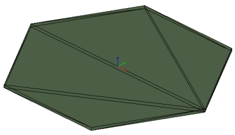
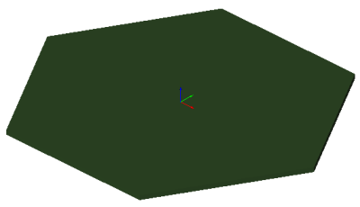

Annex E
(informative)
Examples
E.10.5 - Slab Tessellated Unique Vertices
Example overview
The various examples demonstrate the use of tessellated items with vertex list and index, and optionally normal list and index.
The example shows a hexagonal slab being tessellated with a mesh. Figure E.A and Figure E.B display the rendering in a target application. The tessellation uses a list of unique vertices stored in the IfcCartesianPointList3D. No normals are provided.


IFC-SPF source
ISO-10303-21;
HEADER;
/* use the correct model view definition for the IFC4 reference view */
/* ---------------------------------------------------------------------------------------------- */
FILE_DESCRIPTION(('ViewDefinition [ReferenceView_V1.0]'),'2;1');
FILE_NAME(
/* name */ 'slab-tessellated-unique-vertices.ifc',
/* time_stamp */ '2014-07-10T18:45:13',
/* author */ ('redacted'),
/* organization */ ('redacted'),
/* preprocessor_version */ 'redacted',
/* originating_system */ 'redacted',
/* authorization */ 'None');
FILE_SCHEMA (('IFC4X3_ADD2'));
ENDSEC;
DATA;
/* set the context of the IFC4 exchange file */
/* name, units and geometric representation context */
/* note: IfcOwnerHistory is not in scope of the IFC4 reference view */
/* ---------------------------------------------------------------------------------------------- */
#1= IFCPROJECT('1j1i_xK_X5Tf3O1Ox2mOxp',$,'P1','project used for the unit test case',$,'Default project','',(#14),#24);
/* optionally define recurring instances, such as zero point and main directions */
/* those can be referenced multiple times reducing file sizes */
/* ---------------------------------------------------------------------------------------------- */
#7= IFCCARTESIANPOINT((0.0,0.0,0.0));
#8= IFCDIRECTION((1.0,0.0,0.0));
#9= IFCDIRECTION((0.0,1.0,0.0));
#10= IFCDIRECTION((0.0,0.0,1.0));
#11= IFCAXIS2PLACEMENT3D(#7,#10,#8);
#12= IFCAXIS2PLACEMENT2D(#13,$);
#13= IFCCARTESIANPOINT((0.0,0.0));
/* set the representation context for 3D body, and 2D axis representation */
/* north direction is set to positive y-axis, no geo-spatial coordinates are provided */
/* ---------------------------------------------------------------------------------------------- */
#14= IFCGEOMETRICREPRESENTATIONCONTEXT($,'Model',3,0.00000001,#15,#16);
#15= IFCAXIS2PLACEMENT3D(#7,#10,#8);
#16= IFCDIRECTION((0.0,1.0));
#17= IFCGEOMETRICREPRESENTATIONSUBCONTEXT('Axis','Model',*,*,*,*,#14,$,.MODEL_VIEW.,$);
#18= IFCGEOMETRICREPRESENTATIONSUBCONTEXT('Body','Model',*,*,*,*,#14,$,.MODEL_VIEW.,$);
/* set the default units - and the units used for geometric representations */
/* ---------------------------------------------------------------------------------------------- */
#19= IFCSIUNIT(*,.LENGTHUNIT.,$,.METRE.);
#20= IFCSIUNIT(*,.AREAUNIT.,$,.SQUARE_METRE.);
#21= IFCSIUNIT(*,.VOLUMEUNIT.,$,.CUBIC_METRE.);
#22= IFCSIUNIT(*,.PLANEANGLEUNIT.,$,.RADIAN.);
#23= IFCSIUNIT(*,.TIMEUNIT.,$,.SECOND.);
#24= IFCUNITASSIGNMENT((#19,#20,#21,#22,#23));
/* defines the default building (as required as the minimum spatial element) */
/* ---------------------------------------------------------------------------------------------- */
#30= IFCBUILDING('3uvY$5FxrCov51rMJmsbC8',$,'Grasshopper Building','GH Building',$,#31,$,'GH Building',.ELEMENT.,$,$,$);
#31= IFCLOCALPLACEMENT($,#11);
#32= IFCRELCONTAINEDINSPATIALSTRUCTURE('3T9M5M_z521OJsm4kWHgkR',$,'Building','Building Container for Elements',(#36),#30);
#33= IFCRELAGGREGATES('2uV5ZjLCz2ZO1ngyJeKRdY',$,'Project Container','Project Container for Buildings',#1,(#30));
/* defines the slab as a model element using tessellated geometry */
/* ---------------------------------------------------------------------------------------------- */
#36= IFCSLAB('35DHdKriP6OQIQhodN2chQ',$,'Slab 1','slab 1 used for the unit test case',$,#37,#38,$,.FLOOR.);
#37= IFCLOCALPLACEMENT(#31,#11);
/* geometric representation of the slab is given as tessellated geometry */
/* ---------------------------------------------------------------------------------------------- */
#38= IFCPRODUCTDEFINITIONSHAPE($,$,(#39));
#39= IFCSHAPEREPRESENTATION(#18,'Body','Tessellation',(#41));
/* the list of vertices is collapsed to be unique (minimum exchange data set size) */
/* ---------------------------------------------------------------------------------------------- */
#40= IFCCARTESIANPOINTLIST3D(((-5.0,-8.66025352478027,0.0),(5.0,-8.66025352478027,0.0),(5.0,8.66025352478027,0.0),(-5.0,8.66025352478027,0.0),(10.0,0.0,0.0),(-10.0,0.00000000000000122,0.0),(10.0,0.0,-0.300000011920929),(5.0,8.66025352478027,-0.300000011920929),(5.0,-8.66025352478027,-0.300000011920929),(-5.0,-8.66025352478027,-0.300000011920929),(-10.0,0.00000000000000122,-0.300000011920929),(-5.0,8.66025352478027,-0.300000011920929)),$);
#41= IFCTRIANGULATEDFACESET(#40,$,.T.,((5,4,6),(1,5,6),(4,5,3),(2,5,1),(3,5,7),(5,2,9),(2,1,10),(1,6,11),(6,4,12),(4,3,8),(7,11,12),(10,11,7),(12,8,7),(9,10,7),(3,7,8),(5,9,7),(2,10,9),(1,11,10),(6,12,11),(4,8,12)),$);
ENDSEC;
END-ISO-10303-21;